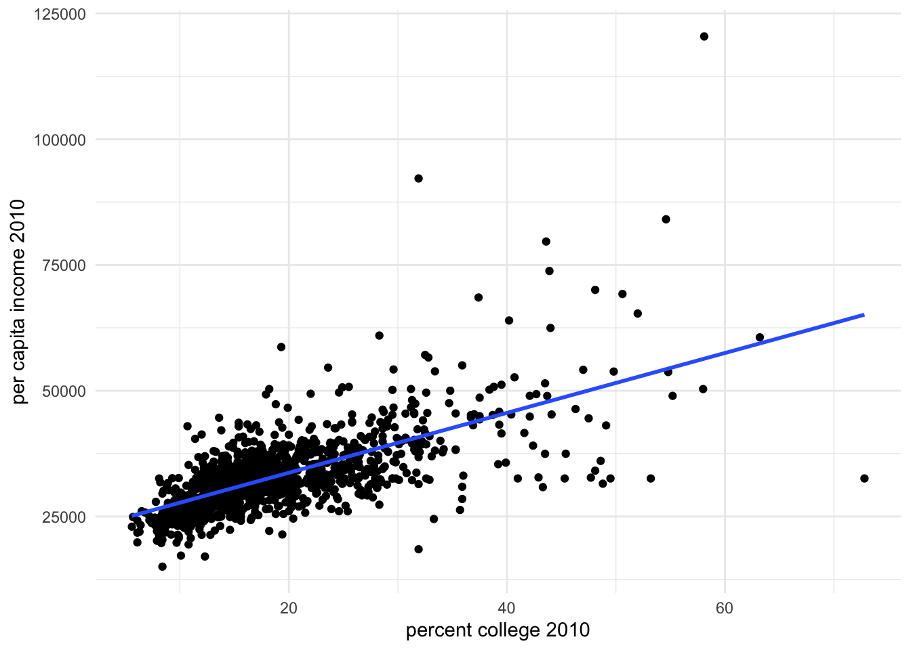

Why causality?
1 An example
user = 2
if(user == 1){
source("/home/user1/Dropbox/Medicaid_South/code/filepath.r")
}else{
source("/Users/vshrestha/Dropbox/Medicaid_South/code/filepath.r")
}
library(pacman)
p_load(fixest, dplyr, ggplot2, tidyverse, patchwork, arrow)
theme_set(theme_minimal())
# load in county level uninsured rate data merged with other variables
mort_allcauses <- read_feather( file.path(datapath, "NVSS_data_county_2010to2017_merged_allcauses.feather")) %>%
filter(year == 2010 & age == 0 & race_name == "black") %>%
dplyr::select("countyfips", "year", "state.abb", "expand", "yearexpand", "sahieunins138", "GovernorisDemocrat1Yes", "mortality_rate1000", "percap_income_2010",
"rural_urban_code2013a", "p_college2010",
"prop_black_2010", "prop_white_2010", "infant.mort",
"poor.health", "low.birthweight") %>%
filter(duplicated(.)) %>%
arrange(countyfips, year)
f0 <- ggplot(subset(mort_allcauses), aes(y = poor.health, x = p_college2010)) + geom_point() +
geom_smooth(method = "lm", se = FALSE) +
xlab("percent college 2010") + ylab("fraction poor health 2010")
f1 <- ggplot(subset(mort_allcauses), aes(y = percap_income_2010, x = p_college2010)) + geom_point() +
geom_smooth(method = "lm", se = FALSE) +
xlab("percent college 2010") + ylab("per capita income 2010")
f3 <- ggplot(subset(mort_allcauses), aes(y = poor.health, x = sahieunins138)) + geom_point() +
geom_smooth(method = "lm", se = FALSE) +
xlab("uninsured rate in 2010") + ylab("fraction poor health 2010")
f0 + f1 + f3## `geom_smooth()` using formula = 'y ~ x'## Warning: Removed 3 rows containing non-finite outside the scale range
## (`stat_smooth()`).## Warning: Removed 3 rows containing missing values or values outside the scale range
## (`geom_point()`).## `geom_smooth()` using formula = 'y ~ x'## Warning: Removed 3 rows containing non-finite outside the scale range (`stat_smooth()`).
## Removed 3 rows containing missing values or values outside the scale range
## (`geom_point()`).## `geom_smooth()` using formula = 'y ~ x'## Warning: Removed 3 rows containing non-finite outside the scale range (`stat_smooth()`).
## Removed 3 rows containing missing values or values outside the scale range
## (`geom_point()`).